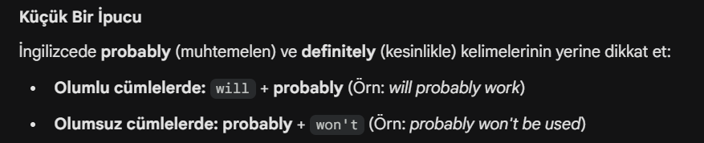
Probably
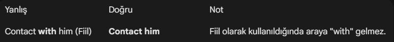
Contact
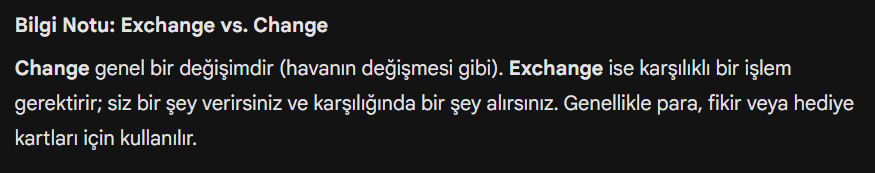
Exchange vs Change
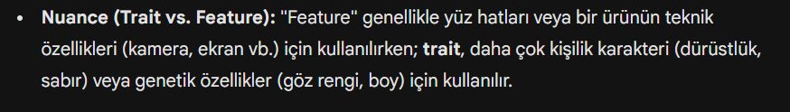
Trait vs Feature
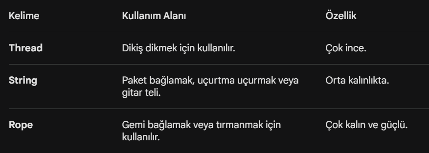
Rope vs String vs Thread
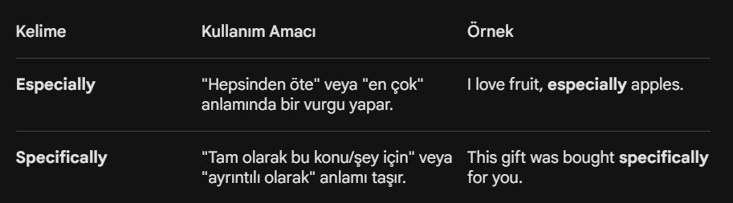
Especially vs Spesifically
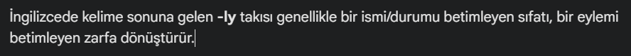
-ly
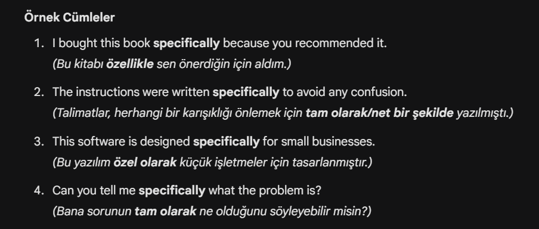
Spesifically
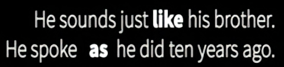
as + tam cümle (s+v) / like + nesne or isim
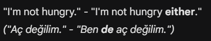
either
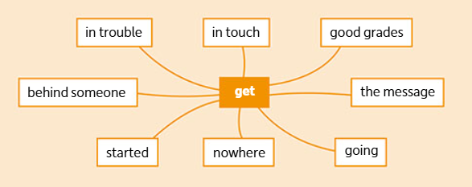
get
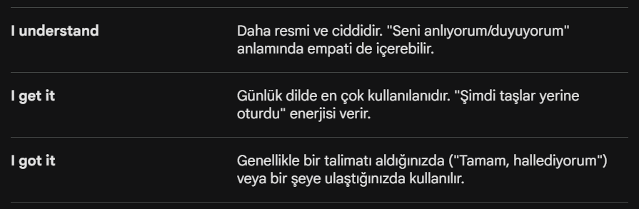
nuance
Gemini kelimelerini analiz edip gruplara ayırıyor...
(Bu işlem yaklaşık 1 dakika sürer)
Kartı çevirmek için tıkla veya Boşluk tuşuna bas.